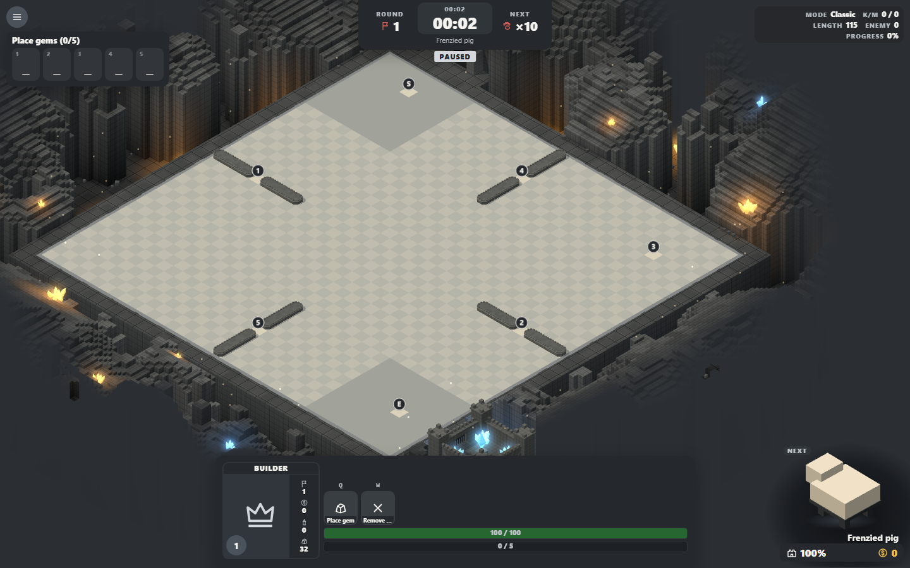
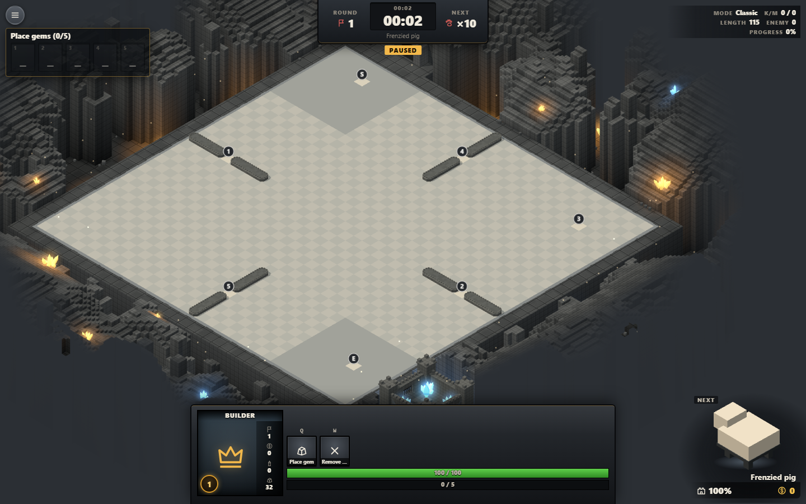

Reskins of the latest fetched HUD at da21e57. Command card, showcase, five-gem panel, clock, stats and settings all retain their current positions.
Flat charcoal surfaces, softly rounded buttons and quiet pale-grey accents. Existing HUD layout retained.


Captured from the actual game with CSS-only overrides. State buttons switch screenshots; controls inside the images are not interactive. Game code is unchanged.